第13章
非球形物体的吸引力
命题85 定理42
如果一个物体受到另一个物体的吸引，而且该吸引作用在它与吸引物体相接触时远大于它们之间有极小间隔时；则吸引物体各粒子的力，在被吸引物体离开时，以大于各粒子的距离比值的平方而减小。
如果力随着到各粒子的距离的平方而减小，则指向球体的吸引力（由命题74）应反比于被吸引物体到球心距离的平方，不会由于接触而有显著增大，而如果在被吸引物体离开时，吸引力以更小的比率减小，则更不可能增大。所以，本命题在吸引球体的情形中是显而易见的。在凹形球壳吸引外部物体的情形中也是一样。而当球壳吸引位于其内部的物体时则更是如此，因为吸引作用在通过球壳的空腔时被扩散，受到反向吸引力的抵消，因而在接触处甚至没有吸引作用。如果在这些球体或球壳远离接触点处移去任意部分，并在其他任意地方增补新的部分，也就对吸引物体作了随意的改变；但在远离接触点处增补或移去的部分对两物体接触而产生的吸引作用没有明显增强。所以本命题对于所有形状的物体都适用。
命题86 定理43
如果组成吸引物体的粒子的力，在吸引物体离开时，随到各粒子距离的三次或多于三次方而减小，则在接触点的吸引力远大于吸引与被吸引物体相互分离时的情形，尽管分离的间隔极小。
当被吸引小球向这种吸引球靠近并接触时，吸引力无限增大，这已在问题41的第二和第三个例子的求解中表明。靠近凹形球壳的物体的吸引（通过比较这些例子和定理41）也是一样，不论被吸引物体是置于球壳之外，还是放在空腔内。而通过移去球体或球壳上接触点以外任意地方的吸引物质，使吸引物体变为预期的任意形状，本命题仍将普适于所有物体。
证毕。
命题87 定理44
如果两个物体相似，并包含吸引作用相同的物质，分别吸引两个正比于这些物体且位置与它们相似的小球，则小球指向整个物体的加速吸引将正比于小球指向物体的与整体成正比且位置相似的粒子的加速吸引。
如果把物体分为正比于整体的粒子，且在其中位置相似，则指向一个物体中任一粒子的吸引力比指向另一个物体中对应粒子的吸引力，等于指向第一个物体中若干粒子的吸引力比指向另一个物体中对应粒子的吸引力；而且，通过比较知，也等于指向整个第一个物体的吸引力比指向整个第二个物体的吸引力。
推论Ⅰ．如果随着被吸引小球距离的增加，各粒子的吸引力按距离的任意次幂的比率减小，则指向整个物体的加速吸引力将正比于物体，反比于距离的幂，如果各粒子的力随被吸引小球的距离的平方而减小，而且物体正比于A3 和B3 ，则物体的立方边，以及被吸引小球到物体的距离正比于A和B；而指向物体的加速吸引将正比于
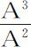
和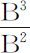
，即，正比于物体的立方边A和B。如果各粒子的力随到被吸引小球距离的立方减小，则指向整个物体的加速吸引将正比于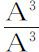
和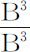
，即，相等。如果力随四次方减小，则指向物体的吸引正比于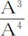
和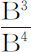
，即反比于立方边A和B。其他情形以此类推。推论Ⅱ．另一方面，由相似物体吸引位置相似小球的力，可以求出在被吸引小球离开时各粒子的吸引力减小的比率；如果这种减小仅仅正比或反比于距离的某种比率的话。
命题88 定理45
如果任意物体中相等粒子的吸引力正比于到该粒子的距离，则整个物体的力指向其重心；对于由相似且相等物质构成，且球心在重心上的球体，它的力情况相同。
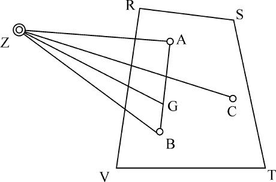
令物体RSTV的粒子A，B以正比于距离AZ，BZ的力吸引任意小球Z，二粒子是相等的；如果它们不相等，则力共同正比于这些粒子与距离AZ，BZ，或者（如果可以这样说的话）正比于这些粒子分别乘以它们的距离AZ，BZ。以A·AZ和B·BZ表示这些力。连接AB，并在G被分割，使AG比BG等于粒子B比粒子A；则G为A和B二粒子的公共重心。力A·AZ可以（根据运动定律推论Ⅱ）分解为力A·GZ和A·AG；而力B·BZ可以分解为B·GZ和B·BG。因为A垂直于B，BG垂直于AG，力A·AG与B·BG相等，所以沿相反方向作用而相互抵消。只剩下力A·GZ和B·GZ。它们由Z指向中心G，复合为力（A＋B）·GZ；即，它等同于吸引粒子A和B一同置于其公共重心上组成一只较小的球体所产生的力。
由相同理由，如果加上第三个粒子C，它的力与指向中心G的力（A＋B）·GZ复合，形成指向位于G的球体与粒子C的公共重心的力；即指向三个粒子A，B，C的公共重心；等同于该球体与粒子C同置于它们的公共重心组成一更大的球体；可以照此类推至于无限。所以任意物体RSTV的所有粒子的合力与该物体保持其重心不变而变为球体形状后相同。
证毕。
推论．被吸引物体Z的运动与吸引物体RSTV变为球体后相同；所以，不论该吸引物体是静止，还是做匀速直线运动，被吸引物体都将沿中心在吸引物体重心上的椭圆运动。
命题89 定理46
如果若干物体由其力正比于相互间距离的相等粒子组成，则使任意小球被吸引的所有力的合力指向吸引物体的公共重心；而且其作用与这些吸引物体保持其公共重心不变而组成一只球体相同。
本命题的证明方法与前一命题相同。
推论．所以被吸引物体的运动，与吸引物体保持其公共重心不变而组成一只球体后相同。所以，不论吸引物体的公共重心是静止，还是做匀速直线运动，被吸引物体都将沿其中心在吸引物体公共重心上的椭圆运动。
命题90 问题44
如果指向任意圆周上各点的向心力相等，并随距离的任意比率而增减；求使一小球被吸引的力，即，该小球位于一条与圆周平面成直角且穿过圆心的直线上某处。
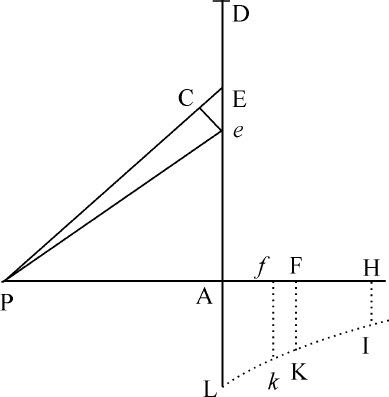
设一圆周圆心为A，半径为AD，处在以直线AP为垂线的平面上；所要求的是使小球P被吸引指向同一圆周的力。由圆上任一点E向被吸引小球P作直线PE。在直线PA上取PF等于PE，并在F作垂线FK，正比于E点吸引小球P的力。再令曲线IKL为点K的轨迹。令该曲线与圆周平面相交于L。在PA上取PH等于PD，作垂线HI与曲线相交于I；则小球P指向圆周的吸引力将正比于面积AHIL乘以高度AP。
完毕。
因为，在AE上取极小线段Ee ，连接Pe ，又在PE，PA上取PC，Pf ，二者都等于Pe 。因为，在上述平面上以A为圆心，AE为半径的圆上任意点E吸引物体P的力，设正比于FK，所以该点把物体吸引向A的力正比于
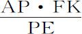
；整圆把物体P吸引向A的力共同正比于该圆和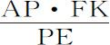
；而该圆又正比于半径AE与宽Ee 的乘积，该乘积又（因为PE与AE，Ee 与CE成正比）等于乘积PE·CE或PE·Ef ；所以该圆把物体P吸引向A的力共同正比于PE·Ff 和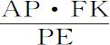
；即正比于Ff ·FK·AP，或正比于面积FKkf 乘以AP。所以，对于以A为圆心，AD为半径的圆，把物体P吸引向A的力的总和，正比于整个面积AHIKL乘以AP。证毕。
推论Ⅰ．如果各点的力随距离的平方减小，即，如果FK正比于
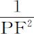
，因而面积AHIKL正比于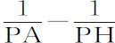
；则小球P指向圆的吸引力正比于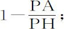
即，正比于
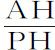
。推论Ⅱ．一般地，如果在距离D的点的力反比于距离的任意次幂；即，如果FK正比于
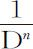
，因而面积AHIKL正比于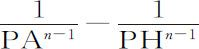
；则小球P指向圆的吸引力正比于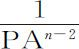
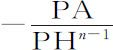
。推论Ⅲ．如果圆的直径无限增大，数n 大于一；则小球P指向整个无限平面的吸引力反比于PA n －2 ，因为另一项
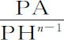
已变为零。命题91 问题45
求位于圆形物体轴上的小球的吸引力，指向该圆形物体上各点的向心力随距离的某种比率减小。
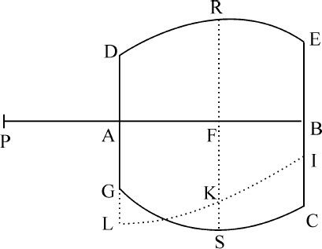
令小球P位于物体DECG的轴AB上，受到该物体的吸引。令与该轴垂直的任意圆RFS分割该物体；圆半径FS在一穿过轴的平面PALKB上，在FS上（由命题90）取长度FK正比于使小球被吸引向该圆的力。令点的轨迹为曲线LKI，与最外面的圆AL和BI的平面相交于L和I；则小球指向物体的吸引力正比于面积LABI。
完毕。
推论Ⅰ．如果物体是由平行四边形ADEB绕轴AB旋转而成的圆柱体，而且指向其上各点的向心力反比于到各点距离的平方；则小球P指向该圆柱体的吸引正比于
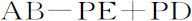
。因为纵坐标FK（由命题90推论Ⅰ）正比于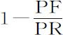
。该量的第一部分乘以长度AB，表示面积1·AB；另一部分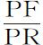
乘以长度PB，表示面积1·（PE－AD）（这易于由曲线LKI的面积求得）；用类似方法，同一部分乘以长度PA表示面积1·（PDAD），乘以PB与PA的差AB，表示面积差1·（PE－PD）。由第一项1·AB中减去最后一项1·（PE－PD）。余下的面积LABI等于1·（AB－PE＋PD）。所以吸引力正比于该面积AB－PE＋PD。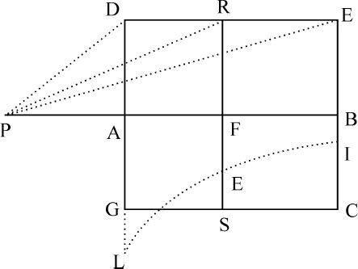
推论Ⅱ．还可以求出椭球体AGBC吸引位于其外且在轴AB上的物体P的力。令NKRM为一圆锥曲线，其垂直于PE的纵坐标ER总是等于线段PD的长度，PD由向该纵坐标与椭圆体的交点D连续画出。由该椭圆体的顶点A，B向其轴AB作垂线AK，BM，分别等于AP，BP，与圆锥曲线相交于K和M；连接KM，分割出面积KMRK。令S为椭圆体的中心，SC为其长半轴；则该椭圆体吸引物体P的力比以AB为直径的球体吸引同一物体的力等于
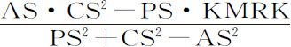
比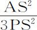
。运用同一原理可以计算出椭圆体球冠的力。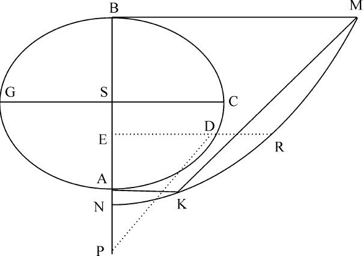
推论Ⅲ．如果小球位于椭球内部的轴上，则吸引力正比于它到球心的距离。这可以容易地由下述理由推出，无论该小球是在轴上还是在其他已知直径上。令AG-OF为吸引椭球，球心为S，P是被吸引物体。通过物体P作半径SPA，再作二条直线DE，FG与椭球交于D和E，F和G；令PCM，HLN为与外面的椭球共心且相似的两个内椭球的表面，其中第一个通过物体P，并与直线DE，FG相交于B和C；后者与相同直线交于H和I，K和L。令所有椭球共轴，且直线被二边截下的部分DP和BE，FP和CG，DH和IE，FK和LG分别相等；因为直线DE，PB和HI在同一点被二等分，直线FG，PC和KL也在同一点被二等分。现设DPF，EPG表示以无限小顶角DPF，EPG画出的相反圆锥曲线，则线段DH，EI也为无限小。由椭球表面分割的圆锥曲线的局部DHKF，GLIE，根据线段DH和EI的相等性知，相互间的比等于到物体P距离的平方，因而对该物体吸引相同。由类似理由，如果把空间DPF，EGCB用无数与上述椭球相似且共轴的椭球加以分割，则得到的所有粒子也都在两边对物体P施加同等反向的吸引。所以，圆锥曲线DPF与圆锥曲线局部EGCB的力相等，而且由于反向作用而相互抵消。这一情形适用于所有内椭球PCBM以外的物质的力。所以，物体P只受到内椭球PCBM的吸引，所以（根据命题72推论Ⅲ）它的吸引力比整个椭球AGOD对物体A的吸引力等于距离PS比距离AS。
完毕。
命题92 问题46
已知吸引物体，求指向其上各点向心力减小的比率。
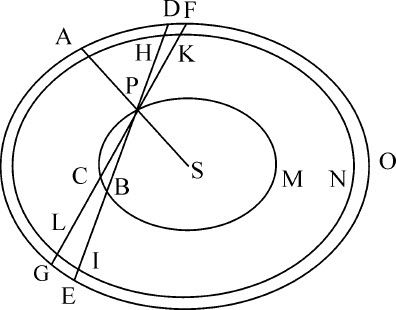
该已知物体必定是球体、圆柱体或某种规则形状物体，它对应于某种减小率的吸引力规律可以由命题80，81和91求出。然后，通过实验，可以测出在不同距离处的吸引力，求出整个物体的吸引规律，由此，即可求得不同部分的力的减小比率；问题得解。
命题93 定理47
如果物体的一边是平面，其余各边都无限伸展，由吸引作用相等的相等粒子组成。当到该物体的距离增大时，其力以大于距离的平方的某次幂的比率减小，一个置于该平面某一侧之前的小球受到整个物体的吸引；则随着到平面距离的增大，整个物体的吸引力将按一个幂的比率减小，幂的底是小球到平面的距离，其指数比距离的幂指数小3。
情形1．令LGI为标界物体的平面。物体位于平面指向I一侧，令物体分解为无数平面m HM，n IN，o KO等等，都与GL平行。首先设被吸引物体C置于物体之外。作CGHI垂直于这些平面，并令物体中各点的吸引力按距离的幂的比率减小，幂指数是不小于3的数n 。因而（由命题90推论Ⅲ）任意平面m HM吸引点C的力反比于CH n －2 。在平面m HM上取长度HM反比于CH n －2 ，则该力正比于HM。以类似方法，在各平面l GL，n IN，o KO等上取长度GL，IN，KO等，反比于CG n －2 ，CI n －2 ，CK n －2 等，这些平面的力正比于如此选取的长度，所以力的和正比于长度的和，即整个物体的力正比于向着OK无限延伸的面积GLOK。而该面积（由已知求面积方法）反比于CG n －3 ，所以整个物体的力反比于CG n －3 。
证毕。
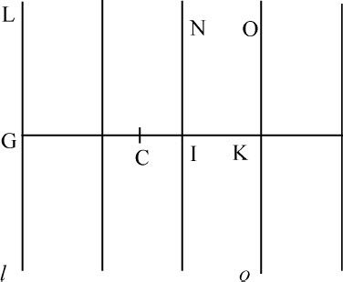
情形2．令小球C置于平面l GL的在物体内的另一侧，取距离CK等于距离CG。在平行平面l GL，o KO之间的物体局部LGlo KO对位于其正中的小球C，既不从一边又不从另一边吸引，相对点的反向作用由于相等而抵消。所以小球只受到位于平面OK以外的物体的吸引。而该吸引力（同情形1）反比于CK n －3 ，即反比于CK n －3 （因为CG，CK相等）。
证毕。
推论Ⅰ．如果物体LGIN的两侧以两个无限的平行平面LG，IN为边，它的吸引力可以由整个无限物体LGKO的吸引力中减去无限延伸至KO的较远部NIKO求得。
推论Ⅱ．如果移去该物体较远的部分，则由于其吸引较之较近部分的吸引小得不可比拟，较近处部分的吸引，将随着距离的增大，近似地以幂CG n －3 的比率减小。
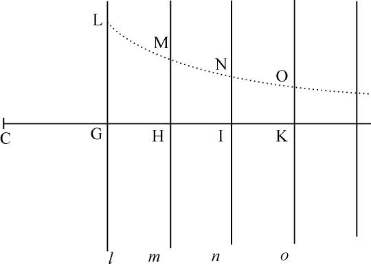
推论Ⅲ．如果任意有限物体，以平面为其一边，吸引置于平面中间附近的小球，小球与平面间的距离较之吸引物体的尺度极小；且吸引物体由均匀部分构成，其吸引力随大于距离的四次方的幂减小；则整个物体的吸引力将极近似于以一个幂的比率减小，幂的底是该极小距离，指数比前一指数小了。但该结论不适用于物体的组成粒子的吸引力随距离的三次幂减小的情形；因为，在此情形中，推论Ⅱ中无限物体的较远部分的吸引总是无限大于较近部分的吸引。
附注
如果一物体被垂直吸引向已知平面，由已知的吸引定律求解该物体的运动；这一问题可以（由命题39）求出物体沿直线落向平面的运动，再（由运动定律推论Ⅱ）将该运动与沿平行于该平面的直线方向的运动相复合。反之，如果要求沿垂直方向指向平面的吸引力的定律，这种吸引力使物体沿一已知曲线运动，则问题可以沿用第三个问题的方法求解。
不过，如果把纵坐标分解为收敛级数，运算可以简化。例如，底数A除以纵坐标长度B为任意已知角数，该长度正比于底的任意次幂
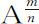
；求使一物体沿纵坐标方向被吸引向或推斥开该底的力，物体在该力作用沿纵坐标上端画出的曲线运动；设该底增加了一个极小的部分O，把纵坐标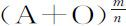
分解为无限级数。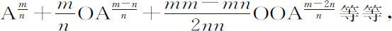
设吸引力正比于级数中O为二次方的项，即正比于
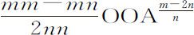
。所以要求的力正比于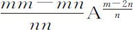
，或者，等价地，正比于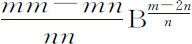
。如果纵坐标画出抛物线，m ＝2，而n ＝1，力正比于已知量2B°，因而是已知的。所以，在已知力作用下物体沿抛物线运动，正如伽利略所证明的那样。如果纵坐标画出双线，m ＝0－1，n ＝1，则力正比于2A－3 或2B3 ；所以正比于纵坐标的立方的力使物体沿双曲线运动。对此类命题的讨论到此为止，下面我将论述一些与尚未涉及的运动有关的命题。